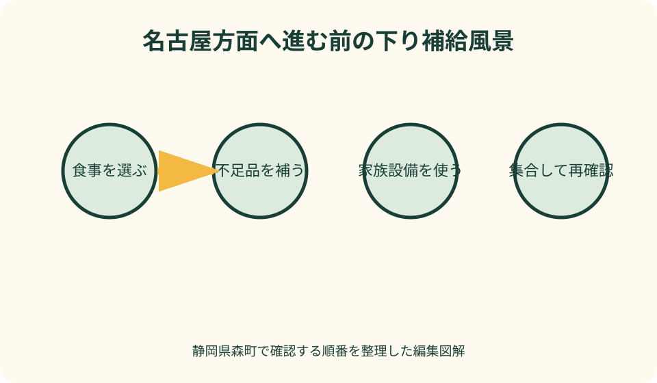
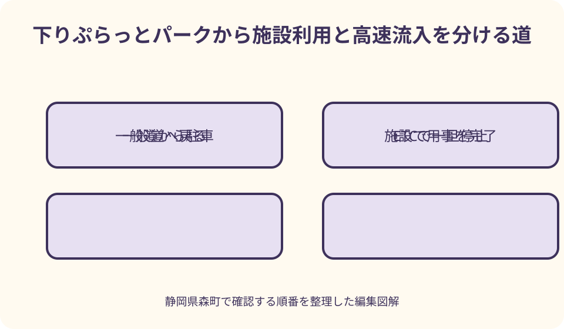

高速道路・食事・補給｜最終確認 2026-08-10
静岡県森町・遠州森町PA下り徹底案内｜名古屋方面の食事・補給・一般道からの使い方
下りは名古屋方面へ向かう側です。確認日現在の公式案内には、複数のフードコート店舗、コンビニ、座敷席、おむつ販売、ATM、郵便ポスト、宅配受付などが並びます。食事の候補が多いだけでなく、西へ進む前に人と荷物を整える場所として見ると使い方が明確になります。ただし、一般道から入るぷらっとパークと、ETCで高速へ出入りするスマートICは役割が異なります。

名古屋方面へ進む前の補給地点として考える
下りは名古屋方面です。静岡県東部や掛川側から浜松、愛知方面へ西進する途中で使う側であり、帰路という意味ではありません。旅行者の自宅位置によっては往路にも復路にもなるため、「帰りだから下り」と覚えず、NEXCO中日本の見出しと道路標識にある進行方向を照合します。
この場所で何を済ませるかは、次にどこまで走るかから逆算します。浜松周辺で高速を降りる人と、その先の愛知・岐阜方面まで進む人では、必要な食事量、飲料、休憩時間が違います。PAへ入る前に、運転者の疲れ、残りの走行距離、次の休憩候補を同乗者が確認します。
下り施設の特徴は、食事だけでなく、コンビニ、ATM、郵便ポスト、宅配受付など、移動中の小さな用事をまとめやすいことです。ただし、用事を増やすほど出発が遅れます。全員が別々に動くのではなく、食事、買い足し、発送の担当を決め、集合時刻を一つにします。
本稿の設備記載は2026年8月10日に公式ページで確認した内容です。店舗の営業時間、商品、設備の稼働、ぷらっとパークの利用条件は将来変わり得ます。記事の数字を保存して使い続けず、出発日にはNEXCO中日本の下り施設ページと現地掲示へ戻ってください。
下り側を見分ける三つの照合点
第一の照合点は「下り・名古屋方面」という表示です。遠州森町という同じ名称の上り施設もありますが、本線上で反対側へ移れると考えてはいけません。目当ての料理やサービスを検索したときは、検索結果の施設名の後ろに下りと名古屋方面があるかを読みます。
第二の照合点は、前後の休憩施設です。NEXCO中日本は下りページで、東側に掛川PA、西側にNEOPASA浜松を案内しています。いま走っている区間と次の進行方向がこの並びに合うかを見れば、誤った側のページを開いていないか確認できます。距離表示は公式の最新画面を使います。
第三の照合点は、下り固有の店舗・サービス一覧です。下りページには確認日現在、フードコート四店、ショッピングコーナー、デイリーヤマザキなどが掲載されています。別側の記事や古い写真と品ぞろえが一致するとは限らないため、公式画面の「下り」を維持したまま店舗欄を開きます。
待ち合わせでも上下線を省略しません。高速側から来る人と一般道側から来る人がいるなら、「下り建物内のどこ」「下りぷらっとパーク側のどこ」まで決めます。高速道路区域と一般道側駐車場の行き来については、現地の歩行者案内に従い、車で迎えに回れると推測しないことが大切です。
四つの食事候補を短時間で選ぶ方法
確認日現在、公式ページは下りのフードコートを四店と案内し、写真例として丼、麺、定食、抹茶を使った甘味を紹介しています。これは選択肢を把握する手掛かりですが、写真の商品が終日提供される保証ではありません。到着後は営業中の店舗、店頭メニュー、売り切れ表示を見て選びます。
家族全員で先に席を探し、あとから料理を決めると、注文列と席取りが長引くことがあります。到着前に「温かい食事」「短時間の軽食」「甘味と飲料」の三種類へ希望を分け、建物内で営業状況を見て決めます。混雑時は全員が同じ店へ並ぶ必要はなく、受け取り場所と集合席を共有します。
下りページにはフードコートの座敷席も掲載されています。小さな子どもや長時間座り続けた人には選択肢になりますが、席数が限られ、空席を保証する情報ではありません。座敷が使えない場合に備え、通常席、車内での補食、次の休憩施設という順に代案を持ちます。
食後すぐ運転へ戻る人は、満腹にすることだけを目的にしません。眠気が増していないか、熱い料理で急いでいないか、水分を取ったかを確かめます。出発予定を数分過ぎても、運転者が落ち着いて歩き、トイレを済ませ、車の位置へ安全に戻る時間を削らない方が合理的です。
コンビニと生活サービスを旅行中の困りごとに使う
公式ページは確認日現在、下りのデイリーヤマザキを24時間営業と案内しています。飲料、補食、日用品を買い足せる可能性がありますが、必要な商品や在庫を保証するものではありません。乳幼児用品や特定の食事制限品は、出発地で準備し、PAは不足分を補う場所と考えます。
おむつ販売もコンビニ内のサービスとして掲載されています。取り扱いサイズ、枚数、在庫はその場で確認する必要があります。おむつを買えるという情報だけで予備を持たずに出発せず、渋滞や臨時休業にも耐えられる最低限を車へ積み、足りなくなったときの補助手段にします。
ATM、郵便ポスト、宅配受付も下りページに案内されています。旅先から荷物を発送したい人には便利ですが、梱包材、受付可能な荷物、集荷時刻、金融機関側の利用条件までは個別確認が必要です。発送物を車内で広げたままにせず、宛先と中身を駐車前に整理します。
バス乗務員休憩室の掲載もあり、下りが観光バスを含む移動の中継点であることが分かります。一般利用者は専用設備へ入らず、団体客の乗降や集合を妨げない位置を使います。大型車区画を横切るときは、運転席から歩行者が見えにくい範囲があることを意識し、子どもを走らせません。

トイレ・家族・バリアフリー設備を先に確認する
食事の前に、同行者がすぐ必要とする設備を確認します。下りページには、バリアフリートイレ、オストメイト対応、ベビーチェア付きトイレ、パウダールーム、AEDが掲載されています。敷地案内で位置を見てから移動し、体調が悪い人を一人で探しに行かせません。
障害者用駐車スペースは掲載がありますが、満車時や工事時の使い方は現地条件で変わります。歩行距離を短くしたい人がいる場合、降車場所を自己判断で作らず、空き区画と歩行経路を確認します。車いすを組み立てる間も、隣の区画や通路へ部品を広げないよう役割を決めます。
子ども連れでは、座敷席やおむつ販売の有無だけで「子連れに困らない」と断定できません。混雑、泣いたときの退席、アレルギー、ベビーカー、手洗いまで考えます。保護者が食事を取れない状況なら、持ち帰れる補食を選び、車を安全な区画に停めたまま交代で休みます。
高齢者同伴の場合は、トイレまでの距離、入口の段差、席の立ち座り、服薬時刻を共有します。本人の希望を聞かずに座敷を選ぶと、かえって立ち上がりが難しい場合があります。設備の名称ではなく、その人が使いやすい姿勢と歩行距離で席を選びます。
下りぷらっとパークとスマートICの順序を間違えない
ぷらっとパークは一般道からPA施設を利用するための入口です。下り施設ページは確認日現在、下り側ぷらっとパークを24時間、小型車用と身障者用の駐車条件を掲載しています。深夜でも必ず全店舗が同じように使えるという意味ではないため、目的の店舗やサービスの営業表示を別に確認します。
遠州森町スマートICは高速道路への出入口です。森町公式は、ETC車載器搭載、車長12メートル以下、上下線の全方向、24時間利用を案内しています。また開閉バーの手前で一旦停止し、バーが開いてから進むよう明記しています。カード挿入と車載器の反応を進入前に確認します。
町公式が示す重要な注意は、スマートICから流入後にPA施設を利用できないことです。一般道から下り施設で食事や買い物をして、そのまま名古屋方面へ乗りたい人は、先にぷらっとパークで用事を済ませ、一般道へ戻った後、標識に従ってスマートICへ向かう順序を組みます。
高速の下りPAで休憩してからスマートICで一般道へ出る人は、退出前に車内の全員へ知らせます。出口を過ぎてから忘れ物や買い忘れに気づいても、後退や逆走はできません。退出直前に、荷物、同乗者、ETCカード、町内目的地、再流入するICの五点を確認します。
森町へ降りるなら短い寄り道と滞在を分ける
森町公式は、スマートIC開通により町内の大部分がICへのアクセス圏になった効果を案内しています。新東名開通一年後の公表資料は、当時の観光交流客数の増加や事業所アンケートの回答を紹介しています。これらは町と高速のつながりを知る資料であり、現在の移動時間や混雑を示す実況ではありません。
名古屋方面へ進む途中の短い寄り道なら、町内で一つだけ目的を決めます。茶や菓子を買う、社寺を参拝する、川沿いで休むといった目的を混ぜず、公式観光情報で営業、駐車、催しを確認します。目的地が決まらないままICを出ると、生活道路で地図を操作する時間が増えます。
半日以上滞在するなら、PA休憩の延長として扱わず、一つの森町訪問として組み直します。帰りに同じスマートICから名古屋方面へ乗るのか、森掛川ICなど別の入口を使うのかを先に比較し、日没、給油、天候、同行者の歩行量を予定に入れます。
運転者が疲れている場合、町へ降りれば気分転換になるとは限りません。一般道では交差点、歩行者、自転車、農作業車への注意が増えます。下りPAで十分に休む、次のNEOPASA浜松まで高速を続ける、予定を取りやめるという選択も同じ価値で残します。

良い点
下りは、確認日現在、複数の食事候補とコンビニを同じ休憩で選べる点が実用的です。家族の食べたいものが分かれても、フードコート内で受け取りと着席を調整できます。選択肢の多さを目的にせず、運転再開までに全員が無理なく食べ終えられる組み合わせを作れます。
座敷席、おむつ販売、トイレ設備に加え、ATM、郵便、宅配といったサービスが案内されており、旅行中に発生した不足や用事へ対応しやすい構成です。すべてを使う必要はありませんが、「次の都市まで我慢する」以外の選択肢を持てることが長距離移動の安心につながります。
一般道側のぷらっとパークとスマートICが近く、施設利用、町内滞在、高速への流入を別々に計画できます。入口の違いを理解すれば、町民側の買い物と高速利用者の休憩が同じ施設資源につながります。町へ寄るか通過するかを休憩後に選べる点も利点です。
注文したい点
下りの情報は施設ページに多く載っていますが、初めての人には、どの設備が建物内のどこにあり、一般道側からどこまで利用できるかを一目でつかみにくい面があります。高速側、ぷらっとパーク側、スマートICの車両動線と歩行動線を重ねた最新図へ、検索画面から直接進めると迷いを減らせます。
フードコート四店、コンビニ、座敷席という掲載は魅力的ですが、繁忙時の待ち時間や空席を約束しません。店舗ごとの最新営業、売り切れ、臨時変更、座席混雑を同じ画面で確認できれば、子ども、高齢者、時間制約のある運転者が早めに代案へ切り替えられます。
町内への入口として案内するなら、観光地名だけでなく、短時間利用と半日滞在を分けた確認表が欲しいところです。ICからの距離を競うのではなく、公式駐車場、歩行量、催し時の変更、再流入経路を示すことで、来訪者が生活道路へ迷い込まず地域を訪ねられます。
代案・結論
高速を名古屋方面へ走っている人は、下り標識を確認して入り、最初にトイレと体調を整えます。その後、食事、補食の購入、発送などから必要な用事だけを選びます。出発時刻を同乗者全員へ伝え、用事が終わらなくても安全な休憩を優先し、次の施設へ分けます。
一般道から下り施設を利用する人は、下りぷらっとパークの最新条件を確認します。施設利用後に高速へ乗るなら、車をそのまま高速側へ進められると思わず、一般道へ戻り、スマートICの案内へ従います。ETCカード、車長、一旦停止を確認し、流入後はPAへ戻れない前提で用事を済ませます。
森町へ寄る人は、短い買い物か、腰を据えた観光かを決めます。短時間なら一か所、半日なら帰路と再流入地点まで計画します。疲労、雨、日没、渋滞のどれかが強ければ寄り道をやめ、下りPAで森町の味や商品に触れるだけでも十分な立ち寄りと考えます。
車内の共有メモには「下り・名古屋方面」「食事か補給か」「ぷらっとパークか高速側か」「スマートICで出るか」「次の休憩はどこか」を書きます。施設名だけでなく、出入口と次の行動を言葉にすることで、運転交代後も同じ判断を続けられます。
大石の視点
私は、下りを単なるグルメの多いPAとして紹介するより、西へ進む前の補給拠点として捉えます。食事、子どもの用事、現金、発送まで選択肢があるからこそ、全部を済ませようとせず、次の走行に必要なものを選ぶ編集が必要です。休憩の成否は購入数ではなく、落ち着いて再出発できるかで決まります。
森町へ降りる判断も、観光地の数ではなく道路へ戻るまでを一続きで見ます。スマートICを出た瞬間から地域の日常道路です。急な停車や地図操作を避け、目的地の駐車場所を先に確かめます。疲れが残る日は町へ出ない判断が、運転者と地域双方への配慮になります。
下りで私が勧める確認順は、到着時に人、建物内で用事、退出前に車と経路です。人は体調と集合、用事は食事と補給の優先順位、車と経路は燃料、ETC、名古屋方面への復帰または町内退出です。この順を守ると、多機能な施設でも行動が散らかりません。
公式情報・確認先
掲載内容は次の一次情報を基礎に整理しました。営業、料金、催し、交通は変わるため、出発前または手続き前にリンク先で最新情報を確認してください。
- 施設・サービス案内 遠州森町PA下り（NEXCO中日本、2026-08-10確認）
- ぷらっとパーク（NEXCO中日本、2026-08-10確認）
- 新東名 遠州森町スマートIC（静岡県森町、2026-08-10確認）
- 『新東名高速道路開通から1年』効果とりまとめ（静岡県森町、2026-08-10確認）